Quién soy y de dónde vengo
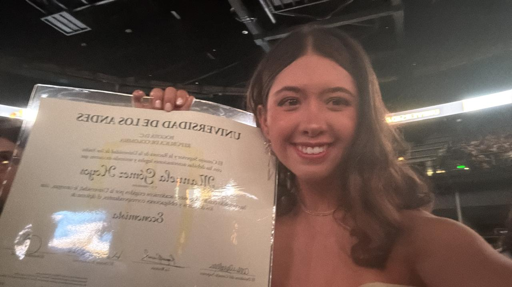
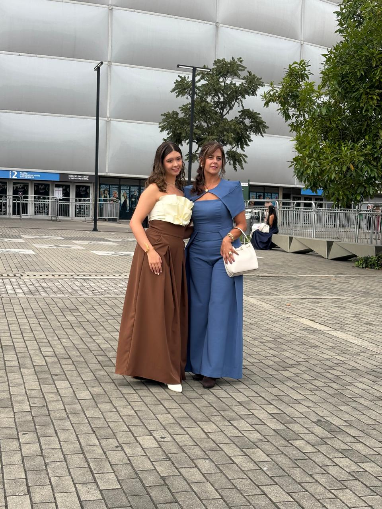
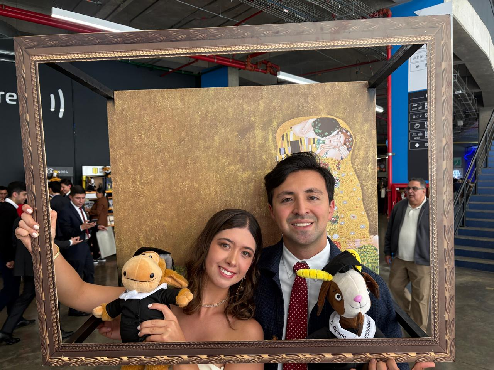
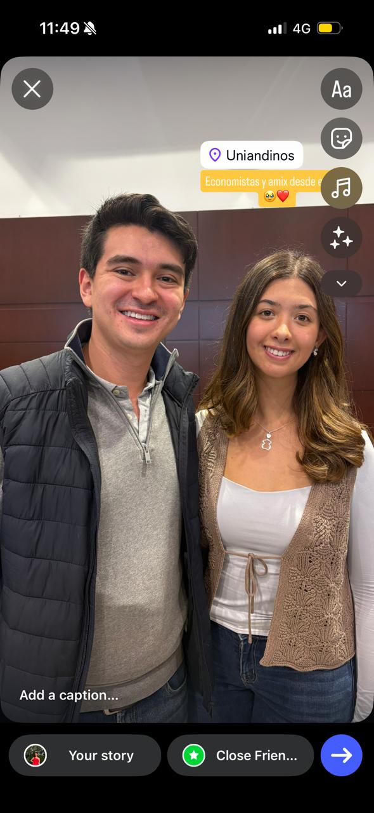
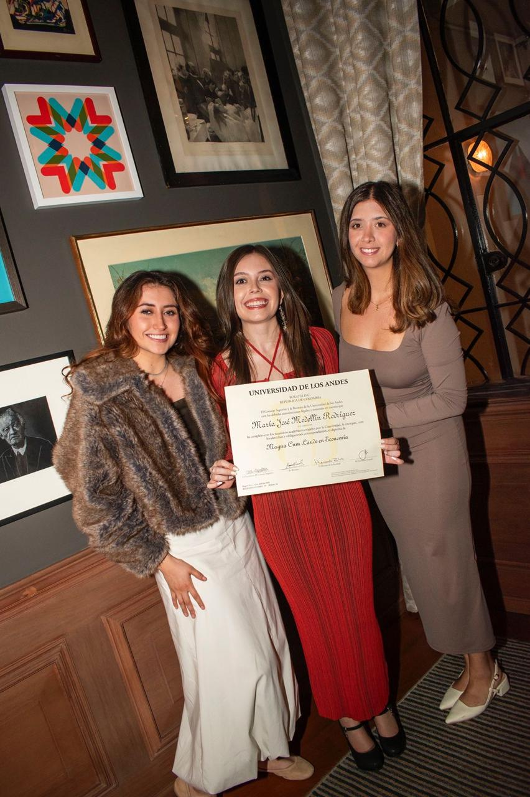
Uniandes, 2025. Economista.
Crecí en Manizales. Una ciudad de montañas y clima perfecto, donde todo lo que necesitaba estaba cerca: mi familia, mi colegio, mis amigas de siempre. A los 18 años decidí irme a Bogotá a estudiar Economía en la Universidad de los Andes, y con esa decisión empezó una versión de mí que no conocía.
No fue la distancia lo que me costó al principio. Fue construir una rutina completamente mía: decidir qué comer, cómo usar el tiempo, qué quería para cada día. Nadie esperaba nada particular de mí en esa ciudad — y eso, que suena a libertad, al principio pesa. Cinco años después, esa versión sigue construyéndose.
Hoy soy economista graduada de Uniandes y estoy en mi penúltimo semestre de Administración de Empresas. El 15 de junio de 2026 inicio prácticas en Evertec, empresa de tecnología de pagos. Es el primer capítulo completamente profesional de mi historia, y llega en un momento en el que me conozco mejor que nunca. No perfectamente. Pero mejor.
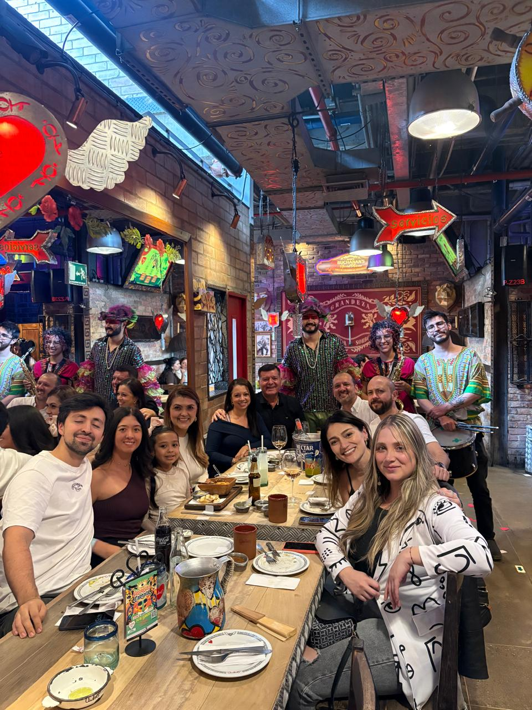
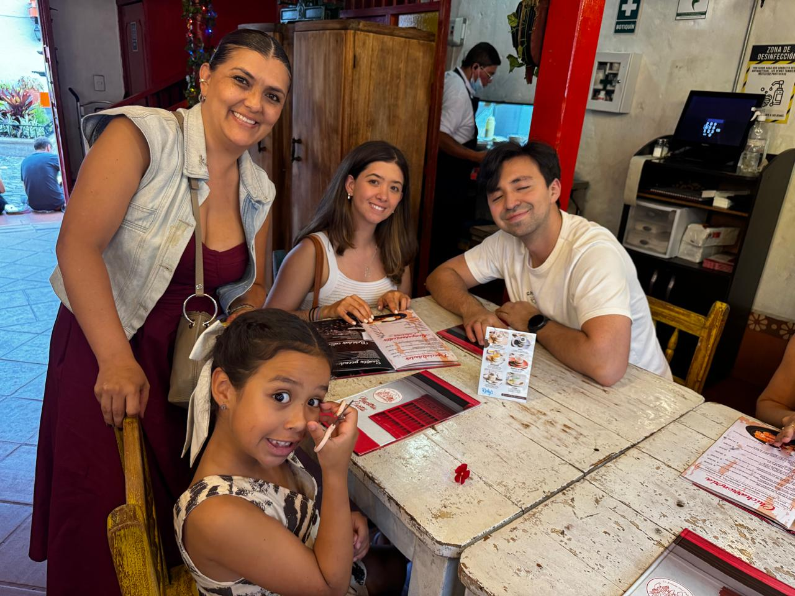
Mi familia. Lo que siempre voy a querer volver a tener cerca.
Lo más difícil de vivir sola no fue el frío de los domingos ni los días de enfermedad sin un abrazo cerca. Fue entender que la familia no desaparece con la distancia — simplemente cambia de forma. Aprendí a llamar más, a decir lo que sentía antes de que se acumulara, a valorar las reuniones como lo que son: momentos que no se repiten.
Hoy, cuando vuelvo a Manizales o cuando nos reunimos en Bogotá, sé exactamente lo que tengo. Y eso también es parte de lo que el TAC me ayudó a ver con más claridad.
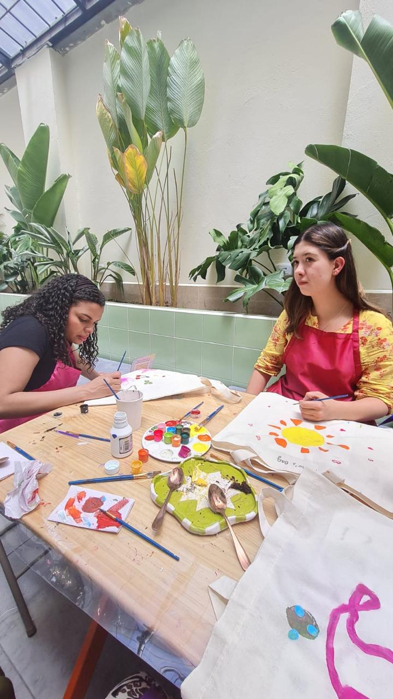
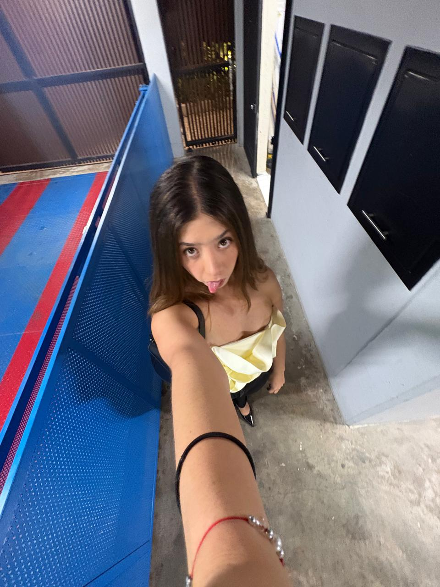
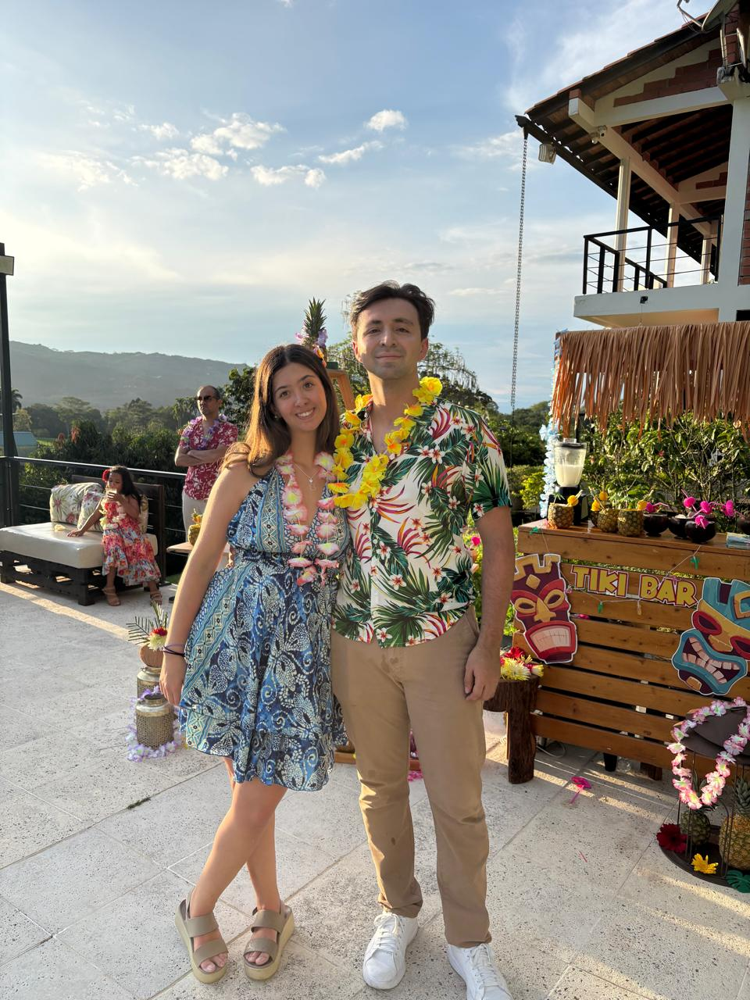
Bogotá: el arte, el ejercicio, los momentos que anclan.
Cinco años viviendo sola me enseñaron que la rutina no es una trampa — es una decisión. Aprendí cuáles son mis límites, qué quiero defender y cómo sostenerme sola cuando toca. Hacer ejercicio, leer, pintar algo sin que tenga que quedar bien. Son los hábitos que construí a prueba y error, y son los que me anclan cuando todo lo demás se siente incierto.
Bogotá me hizo más independiente. Me hizo también más consciente de lo que necesito para estar bien — y de lo que me cuesta reconocer cuando no lo estoy.
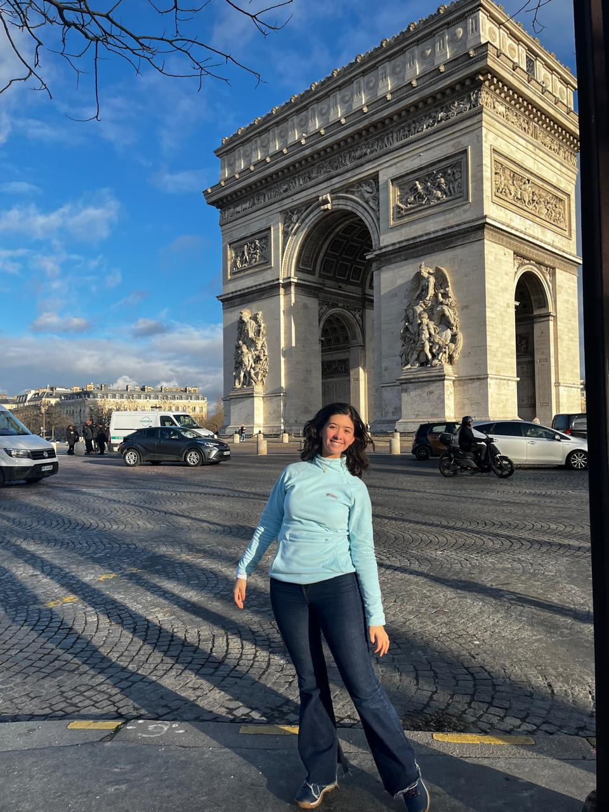
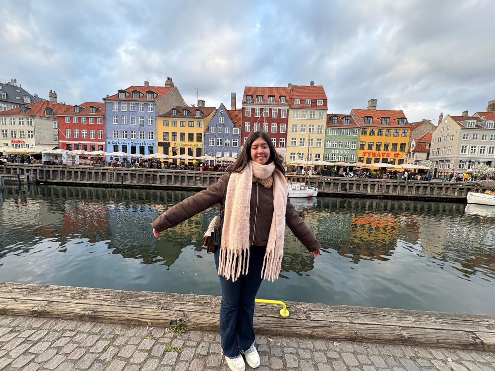
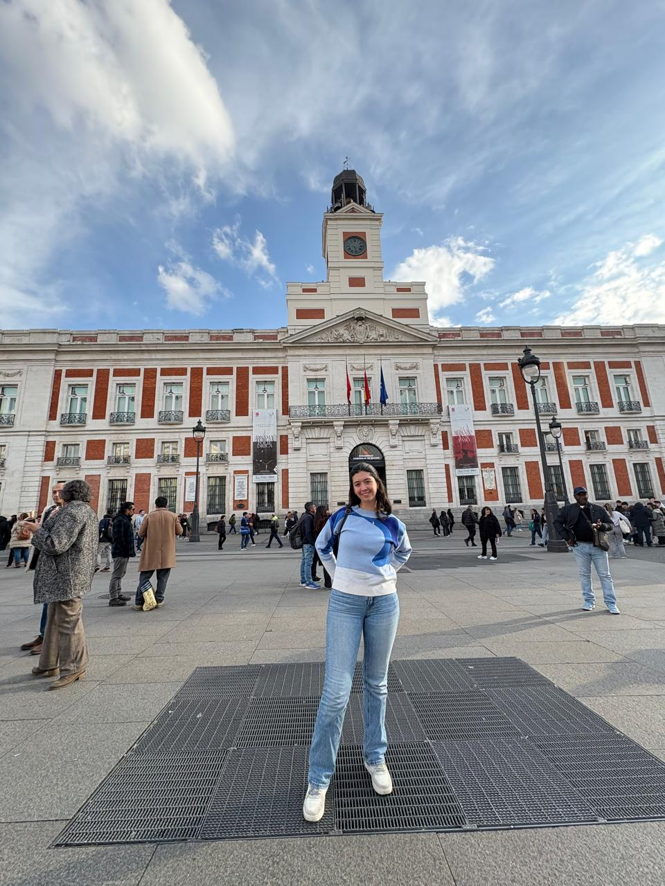
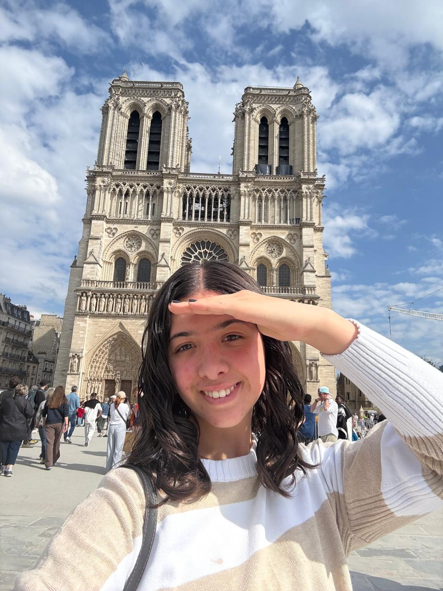
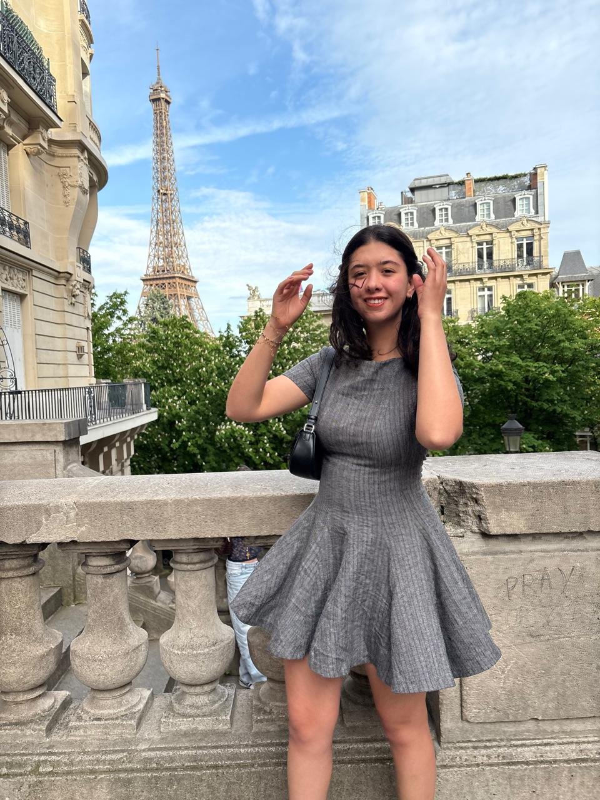

París, enero–mayo 2025. Cinco países. Una versión más libre.
En enero de 2025 aterricé en París. Hacía un frío que nunca había sentido. El sol salía a las nueve de la mañana y se escondía antes de que terminara el día. Los primeros días fueron de adaptación pura: el metro, el francés desempolvado, el apartamento por amueblar.
Pero después de un mes, algo cambió. La ciudad dejó de ser un reto logístico y se convirtió en el escenario de uno de los capítulos más libres de mi vida. Conocí cinco países, vi París transformarse del invierno a la primavera, leí en los parques con el sol de las seis de la tarde.
París me enseñó que puedo construir una vida en cualquier parte. Y que siempre voy a querer volver a casa.